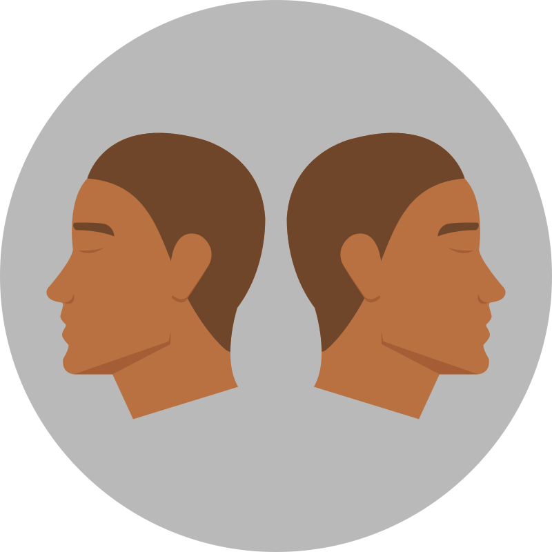
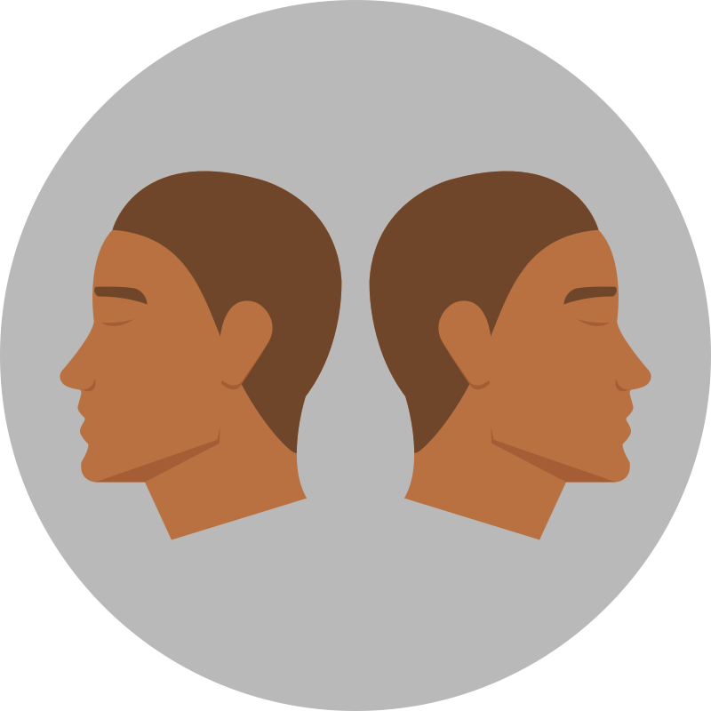
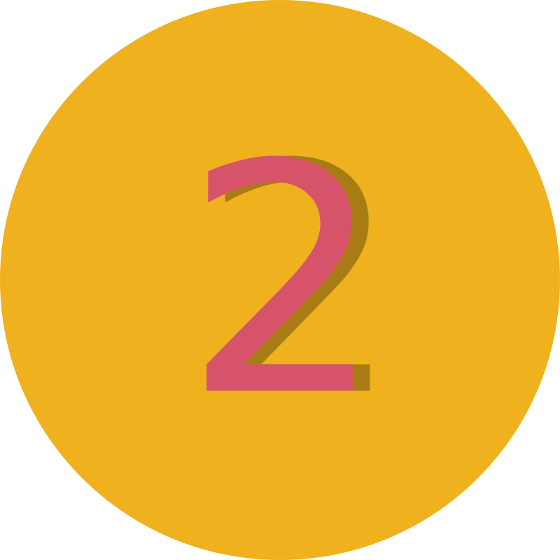
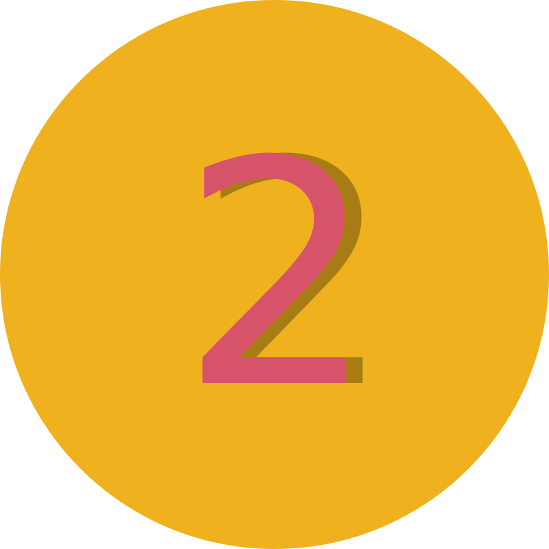

Lass die Sorgen los und tauche in die Welt der Astrologie ein.
Erstelle dein persönliches Horoskop, und du wirst vieles über dich selbst besser verstehen. Bei Fragen kannst du dich gerne an einen erfahrenen Astrologen wenden, frag mich zum Beispiel.
dein persönliches Horoskop
Merkmale der Nakshatra Uttara Bhadrapada
Nakshatra Uttara Bhadrapada (die 26. von 27 Nakshatras, 3°20′ – 16°40′ in den Fischen).
„Menschen mit dem Mond in Uttara Bhadrapada sind glückliche Personen, ausgezeichnete Redner, die Kinder und Enkel haben, ihre Feinde besiegen und tugendhaft sind.“ – Varahamihira
Eigenschaften der Nakshatra Uttara Bhadrapada
Zodiak
3°20′ – 16°40′ in den Fischen
Regentenplanet
Saturn
Symbol
Zwei Köpfe, Zwillinge
Gottheit
Ahirbudhnya, Lakshmi
Varna/Kaste
Kshatriya
Ziel
Kama (Leidenschaft)
Ursprung
Menschlich
Temperament
Unbeweglich (Dhruva)
Guna
Tamas
Geschlecht
Männlich
Qualität
Erhaltung
Ayurvedische Konstitution
Pitta
Element
Äther
Richtung
Westen bis Norden
Körperteile
Rippen, Seiten, Beine, Fußsohlen, Schienbeine
Tier
Kuh
Laute
Du, Tha, Jha, Na
Feind
Purva Phalguni
Schlüsselkonzept der Nakshatra Uttara Bhadrapada
Uttara Bhadrapada ermöglicht es, sich mit den nährenden und unterstützenden Aspekten der eigenen Persönlichkeit und Umgebung zu verbinden, was zu maximalem Wachstum und reichem Ertrag führt.
Der Charakter dieser Nakshatra ist schwer genau zu definieren. Sie passt sich ihren Bedürfnissen und der Umgebung an und besitzt eine große Vielfalt an Eigenschaften und Manifestationen. Weisheit ist das Schlüsselwort dieser Nakshatra, und die von ihr Beeinflussten handeln oft entsprechend den Besonderheiten des gegenwärtigen Moments. Die Absichten von Uttara Bhadrapada sind meist wohlwollend, ihre Ambitionen uneigennützig und voller Mitgefühl und Verständnis.
Trotz ihrer scheinbaren Flexibilität hat Uttara Bhadrapada einen stabilen Charakter. Flexibilität dient ihr lediglich als Mittel zum Zweck. Sie kann mit einem weisen alten Mann verglichen werden, der niemals überstürzt handelt und oft Entscheidungen aufschiebt, um langfristig zu profitieren. Diese Neigung zur Verzögerung kann jedoch manchmal zu Faulheit führen, selbst wenn Handeln dringend erforderlich ist.
Menschen unter dem Einfluss von Uttara Bhadrapada behalten immer die Gesamtheit im Blick, wenn sie Pläne schmieden oder Entscheidungen treffen. Sie bemühen sich, auch unter schwierigen und stressigen Umständen glücklich zu bleiben. Diese Personen sind oft gute Berater, da die beruhigende Natur dieser Nakshatra Emotionen wie Wut, Rachsucht und Neid mildert.
Der Aszendent in Uttara Bhadrapada verleiht eine ruhige und gelassene Erscheinung, Bescheidenheit, Passivität und oft eine kräftige Statur mit breiten Schultern. Mit zunehmendem Alter neigen diese Menschen dazu, an Gewicht zuzulegen. Die Manifestation der Nakshatra hängt stark von der Position des Saturns in der Geburtskarte ab. Das Vorhandensein von feurigen Planeten wie Mars, Sonne und Jupiter in Uttara Bhadrapada hilft, die Trägheit zu überwinden.
In einem guten Zustand verleiht Uttara Bhadrapada Weisheit und die Fähigkeit, Perspektiven im Leben richtig zu erkennen. Wenn sie geschwächt ist, führt sie zu übermäßiger Vorsicht, Angst vor der Realität und Widerstand gegenüber Veränderungen.
Diese Nakshatra kann auch scheinbar destruktive oder schädliche Handlungen hervorrufen, die jedoch immer durch Vernunft motiviert sind. Ihr Zorn ist edel, und selbst in schwierigen Situationen handelt sie nicht unüberlegt oder unmoralisch.
Menschen unter dem Einfluss dieser Nakshatra verfügen oft über Fähigkeiten in Astrologie, Numerologie, Yoga, Meditation und Wahrsagerei. Sie sind finanziell geschickt, erzielen gute Einnahmen und sind erfolgreich im Umgang mit Geld. Uttara Bhadrapada wird mit der dritten Phase des Lebens verbunden, in der man laut vedischer Philosophie die Bindungen an die materielle Welt lösen und spirituelle Erleuchtung suchen sollte.
Bei negativen Einflüssen kann sie jedoch zu Klatsch, Zorn und Aggression führen. In schlechten Konstellationen in der Geburtskarte sind auch Neigungen zu Sucht und unkontrolliertem Verhalten möglich.
Mystik der Sterne
Die Geheimnisse des Zodiaks
Merkmale der Männer in der Nakshatra Uttara Bhadrapada
Männer dieser Nakshatra sind charmant und attraktiv und bemühen sich, anderen keinen Unmut zu bereiten. Sie können gleichermaßen gut mit Menschen unterschiedlicher sozialer Herkunft umgehen und legen keinen großen Wert auf den sozialen Status. Sie sind temperamentvoll, impulsiv und haben Schwierigkeiten, Beleidigungen zu vergeben, wobei ihre Stimmung oft wechselt.
Sie sind bereit, alles zu opfern, einschließlich ihres Lebens, für die, die sie lieben. Ihre Weisheit, ihr Wissen und ihr Redetalent lassen sie gebildet erscheinen, selbst wenn sie keine formale Ausbildung abgeschlossen haben. Sie besitzen die Fähigkeit, ihre Feinde zu besiegen und eine hohe Position zu erreichen. Sie sind sexuell anziehend und genießen die Gesellschaft von Frauen.
Diese Männer können in verschiedenen Bereichen erfolgreich sein, interessieren sich für die schönen Künste und sind in der Lage, umfangreiche wissenschaftliche Arbeiten, Artikel und Bücher zu schreiben. Da sie nicht faul sind, können sie ihre Talente voll ausschöpfen. Sie handeln oft mit Enthusiasmus und geben nicht auf, wenn etwas nicht gelingt. Sie sind erfolgreich in ihrer Karriere und verantwortungsvoll in ihrer Arbeit. Stabilität und Erfolg kommen nach der Heirat. Sie beginnen im Alter von 17–18 Jahren zu verdienen. Veränderungen im beruflichen Bereich treten im Alter von 19, 21, 28, 30, 35 und 42 Jahren auf.
Sie haben großen Respekt vor ihrem Vater, erhalten jedoch wenig Unterstützung von ihrer Familie und leben oft weit von ihr entfernt. Ihr Eheleben ist glücklich – sie haben eine gute Ehefrau und gehorsame Kinder.
Ihre Gesundheit ist im Allgemeinen gut, obwohl sie sich nicht besonders darum kümmern und nur bei ernsthaften Erkrankungen einen Arzt aufsuchen. Mögliche gesundheitliche Probleme umfassen Magen-Darm-Erkrankungen und Lähmungen.
Merkmale der Frauen in der Nakshatra Uttara Bhadrapada
Frauen dieser Nakshatra sind von mittlerer Größe, haben eine kräftige Statur und große, leicht hervorstehende Augen. Sie sind freundlich, zärtlich, warmherzig und respektvoll. Sie sind ausgezeichnete Haushälterinnen und liebevolle Mütter.
Sie passen sich leicht an Menschen und Umstände an. Als Angestellte leisten sie außergewöhnliche Arbeit und bemühen sich, eine gute Position zu erreichen. Sie sind hervorragend in den Bereichen Anwaltschaft und Justizverwaltung und können großartige Krankenschwestern und Ärztinnen sein.
Diese Frauen sind ein wahrer Diamant – sowohl in ihrer Herkunftsfamilie als auch in ihrer eigenen. Es wird angenommen, dass sie unter dem Schutz der Göttin Lakshmi stehen.
Mögliche gesundheitliche Probleme umfassen Rheuma, Hernien, Verstopfungen und latente Tuberkulose.
Padas (Viertel) der Nakshatra Uttara Bhadrapada
Erste Pada (03°20′ – 06°40′ in den Fischen)
Diese Pada gehört zur Navamsha des Löwen und wird von der Sonne regiert. Sie repräsentiert die aktive und zielorientierte Seite der Nakshatra. Charakteristische Merkmale sind Schönheit, Reichtum, Wahrhaftigkeit und Beliebtheit.
Zweite Pada (06°40′ – 10°00′ in den Fischen)
Diese Pada gehört zur Navamsha der Jungfrau und wird von Merkur regiert. Sie steht für die analytische, rationale und planende Seite der Nakshatra. Hier wird Weisheit in den Details gesucht. Planeten in dieser Pada bleiben oft im Hintergrund und entfalten sich nicht vollständig.
Dritte Pada (10°00′ – 13°20′ in den Fischen)
Diese Pada gehört zur Navamsha der Waage und wird von Venus regiert. Sie symbolisiert die passive Seite der Nakshatra, die nach Gleichgewicht und Harmonie im Leben strebt. Eigenschaften sind Höflichkeit, Bildung, jedoch auch mögliche Unbeherrschtheit.
Vierte Pada (13°20′ – 16°40′ in den Fischen)
Diese Pada gehört zur Navamsha des Skorpions und wird von Mars regiert. Sie ist mit der okkulten, geheimnisvollen Seite der Nakshatra verbunden. Sie kann entweder tiefe Verwirrung oder tiefgreifende Weisheit bringen. In den Bereichen, die durch Planeten oder Häuser im Horoskop beeinflusst werden, erzeugt diese Pada oft Spannungen und intensive Energie. Sie bringt Reichtum, eine gute und treue Ehefrau sowie ein langes Leben.
Einfluss der Aspekte auf den Mond in der Nakshatra Uttara Bhadrapada
Aspektierender Planet
Einfluss
Sonne
Ruhm und Reichtum.
Mars
Arbeit im Verteidigungsbereich oder anderen Sicherheitsbereichen.
Merkur
Der Horoskopeigner ist eine anziehende Persönlichkeit und könnte ein guter Astrologe werden. Mit dem Aspekt von Jupiter wird eine hohe soziale Stellung erreicht.
Venus
Religiosität, Wohlstand und Freude durch Kinder.
Saturn
Neigung zur Grausamkeit.
Einfluss des Mondes in der Nakshatra Uttara Bhadrapada
Mond in der 1. Viertel (03°20′ – 06°40′ in den Fischen)
Menschen mit dem Mond in dieser Viertelposition zeichnen sich durch Schönheit, Reichtum, Wahrhaftigkeit und Beliebtheit aus. Wenn sich die Venus in der 2. oder 3. Viertel der Nakshatra Hasta befindet, neutralisiert dies alle negativen Aspekte im Horoskop, und die Person führt ein langes, gesundes, glückliches und wohlhabendes Leben.
Mond in der 2. Viertel (06°40′ – 10°00′ in den Fischen)
Die Position des Mondes in 10° in den Fischen gilt als ungünstig, da das Kind möglicherweise vor dem 10. Lebensjahr stirbt.
Mond in der 3. Viertel (10°00′ – 13°20′ in den Fischen)
Diese Mondposition verleiht Höflichkeit, jedoch auch Unbeherrschtheit und Bildung. Wenn Venus in der Nakshatra Rohini positioniert ist, verliert der Horoskopeigner seine Mutter und wird von Verwandten des Vaters erzogen. Die Beziehung zum Vater bleibt kühl. Die Person beginnt ihre Karriere als Büroangestellter, erreicht jedoch mit 35 Jahren eine höhere Position.
Mond in der 4. Viertel (13°20′ – 16°40′ in den Fischen)
Diese Position bringt Reichtum, eine gute und treue Ehefrau sowie ein langes Leben.
Einfluss der Sonne in den Vierteln der Nakshatra Uttara Bhadrapada
Viertel
Geburtszeitraum
Einfluss
Erste Pada
3. – 6. Dezember
Gefahr von Vergiftungen. Wenn auch Saturn und der Mond in diesem Bereich sind, kann dies frühe Lebensgefahr anzeigen.
Zweite Pada
6. – 9. Dezember
Ausdauer und Reichtum. Ein Leben mit sozialem Aufstieg, jedoch sind gesundheitliche Probleme in den mittleren Jahren möglich.
Dritte Pada
9. – 12. Dezember
Bei Männern kann der frühe Tod des Vaters auftreten, wenn Saturn und Mars im Aspekt zur Sonne stehen und die Geburt tagsüber war.
Vierte Pada
12. – 15. Dezember
Wenn die Sonne sich zwischen Saturn und Mars befindet oder diese beiden in Mrigashira oder Ardra stehen, könnte der Vater des Horoskopeigners durch einen Unfall frühzeitig versterben.
Einfluss der Sonne in der Nakshatra Uttara Bhadrapada
Sonne im Intervall 3°20′ – 6°40′ in den Fischen (Geburt zwischen 17. und 20. März)
Menschen mit der Sonne in diesem Intervall erreichen eine hohe gesellschaftliche Position, haben eine gute Familie und genießen Komfort. Befinden sich jedoch schädliche Planeten in dieser Position, besteht ein Risiko für Krebs.
Sonne im Intervall 6°40′ – 10°00′ in den Fischen (Geburt zwischen 20. und 24. März)
In einem weiblichen Horoskop kann diese Sonnenposition in Kombination mit dem Mond in der Nakshatra Hasta bedeuten, dass die Frau die Ursache für den Tod ihres Ehemannes sein wird.
Sonne im Intervall 10°00′ – 13°20′ in den Fischen (Geburt zwischen 24. und 27. März)
Wenn Merkur in Aspekt oder Konjunktion mit der Sonne steht, verleiht dies Intelligenz und eine gute Ausbildung. Befindet sich Venus in dieser Position und Saturn in der Nakshatra Swati, kann die Person Mitglied der Regierung werden. Es besteht eine Neigung, häufig die Arbeit oder den Beruf zu wechseln.
Sonne im Intervall 13°20′ – 16°40′ in den Fischen (Geburt zwischen 27. und 30. März)
Wenn sich Mars ebenfalls in dieser Viertelposition befindet oder ein Aspekt von Mars vorliegt, und der Aszendent in der Nakshatra Hasta steht, können Gefahren für die Kinder der Person auftreten.
Einfluss der Aspekte auf Mars in der Nakshatra Uttara Bhadrapada
Aspektierender Planet
Einfluss
Sonne
Glück, Bekanntheit und eine Neigung zur Grausamkeit.
Mond
Gute Bildung, jedoch möglicherweise gesundheitliche Probleme oder ein körperliches Handicap. Der Horoskopeigner könnte auch Verbindungen zu kriminellen Kreisen haben.
Merkur
Gute Bildung, Neigung und Interesse an Kunst.
Jupiter
Wohlstand, komfortables Leben, jedoch Unglück in der Ehe.
Venus
Neigung zu Wohltätigkeit, aber nicht immer selbstlos.
Saturn
Viele Reisen und möglicherweise ein körperliches Handicap.
Einfluss des Mars in der Nakshatra Uttara Bhadrapada
Mars in der 1. Viertel (03°20′ – 06°40′ in den Fischen)
Diese Position des Mars kann auf Emigration, Betrug, Verlust von Vermögen und Trennung von der Familie hinweisen.
Mars in der 2. Viertel (06°40′ – 10°00′ in den Fischen)
Wenn Mars in dieser Viertelposition mit dem Aszendenten verbunden ist, besteht ein Risiko für Krebs. Der Horoskopeigner wird egoistisch und unglücklich sein.
Mars in der 3. Viertel (10°00′ – 13°20′ in den Fischen)
Diese Position kann gesundheitliche Probleme verursachen. Es besteht die Möglichkeit von Emigration, Betrug und Diebstählen. Der Horoskopeigner neigt dazu, Schmeichelei zu lieben, und wird mehrere Kinder haben.
Mars in der 4. Viertel (13°20′ – 16°40′ in den Fischen)
Diese Position bringt Gesundheit, Energie und Aktivität. Wenn Mars mit Merkur verbunden ist, kann der Horoskopeigner Ingenieur werden. Es kann jedoch auch zu Disharmonie in der Ehe kommen.
Einfluss der Aspekte auf Merkur in der Nakshatra Uttara Bhadrapada
Aspektierender Planet
Einfluss
Sonne
Ruhiger Charakter. Mögliche Erkrankungen der Harnwege.
Mond
Freundlichkeit, Zuverlässigkeit in Freundschaften und literarisches Talent.
Mars
Der Horoskopeigner könnte als Schriftsteller Geld verdienen, aber seine Werke werden der Gesellschaft keinen Nutzen bringen.
Jupiter
Attraktive Charakterzüge und Edelmut. Möglicher hoher politischer Status.
Venus
Redekunst und pädagogische Fähigkeiten.
Saturn
List, Grausamkeit und Unglück.
Einfluss des Merkurs in der Nakshatra Uttara Bhadrapada
Merkur in der 1. Viertel (03°20′ – 06°40′ in den Fischen)
Menschen mit Merkur in dieser Position verfügen über eine reiche Vorstellungskraft und eine gute Intuition, die sich im Laufe ihres Lebens weiterentwickeln.
Merkur in der 2. Viertel (06°40′ – 10°00′ in den Fischen)
Diese Position kann auf eine erfolgreiche Karriere als Anwalt oder Geschäftsmann hinweisen. Der Horoskopeigner hat Talente in Mathematik und Astrologie und ist ein Experte in Literatur.
Merkur in der 3. Viertel (10°00′ – 13°20′ in den Fischen)
Menschen mit Merkur in dieser Viertel erhalten eine ausgezeichnete Ausbildung und üben einen unabhängigen Beruf aus. Wenn Jupiter mit Merkur verbunden ist, wird der Horoskopeigner ein berühmter Lehrer und für seine Forschungen zu alten Traditionen bekannt.
Merkur in der 4. Viertel (13°20′ – 16°40′ in den Fischen)
Diese Position bringt Wohlstand, familiäres Glück und ein hohes gesellschaftliches Ansehen. Wird Merkur jedoch von einem schädlichen Planeten beeinflusst, könnte der Horoskopeigner als Hilfsarbeiter tätig sein.
Einfluss der Aspekte auf Jupiter in der Nakshatra Uttara Bhadrapada
Aspektierender Planet
Einfluss
Sonne
Armut und mangelnde Beliebtheit bei anderen.
Mond
Glück im Familienleben, Reichtum und Wohlstand.
Mars
Grausamkeit. Der Horoskopeigner wird stets Probleme für andere verursachen.
Merkur
Hohes soziales Ansehen.
Venus
Glück und ein langes Leben.
Saturn
Neigung zum Diebstahl.
Einfluss des Jupiters in der Nakshatra Uttara Bhadrapada
Jupiter in der 1. Viertel (03°20′ – 06°40′ in den Fischen)
Wenn der Aszendent ebenfalls in diese Viertel fällt, wird der Horoskopeigner zuerst einen Sohn und dann eine Tochter haben. Befindet sich Jupiter in dieser Position und wird von der Sonne aspektiert, kann ein hohes gesellschaftliches Ansehen erwartet werden.
Jupiter in der 2. Viertel (06°40′ – 10°00′ in den Fischen)
Wenn Jupiter mit Mond und Mars verbunden ist und der Aszendent ebenfalls in diese Viertel fällt, wird der Horoskopeigner außergewöhnlich reich.
Jupiter in der 3. Viertel (10°00′ – 13°20′ in den Fischen)
Jupiter, der von einer wohltätigen Planeten aspektiert wird und in dieser Viertel sowie im Aszendenten der Nakshatra Purva Phalguni positioniert ist, weist darauf hin, dass der Horoskopeigner während einer Pilgerreise versterben wird. Wenn der Mond Jupiter aspektiert, könnte die Person in einem heiligen Fluss ertrinken.
Jupiter in der 4. Viertel (13°20′ – 16°40′ in den Fischen)
Der Horoskopeigner kann ein guter Arzt werden. Wenn Mars Jupiter in einem männlichen Horoskop aspektiert, ist eine Karriere im Militär möglich. Ein hohes gesellschaftliches Ansehen kann erwartet werden, wenn Jupiter in dieser Viertel mit dem Aszendenten verbunden ist.
Einfluss von Venus in den Vierteln der Nakshatra Uttara Bhadrapada
Viertel
Gradbereich
Einfluss
Erste Pada
00°00′ – 03°20′ des Schützen
Mögliche Augenkrankheiten. Wenn Sonne und Jupiter ebenfalls hier stehen, wird der Horoskopeigner mutig, klug und wird eine sehr hohe gesellschaftliche Stellung erreichen.
Zweite Pada
03°20′ – 06°40′ des Schützen
Diese Position verleiht dem Horoskopeigner Führungsqualitäten. Er könnte kulturelle oder soziale Organisationen leiten, die sich für das Wohl von Frauen einsetzen.
Dritte Pada
06°40′ – 10°00′ des Schützen
Venus in diesem Viertel zeigt ein Leben in Armut und das Fehlen von Glück und Familie an.
Vierte Pada
10°00′ – 13°20′ des Schützen
Harmonie und Unterstützung innerhalb der Familie. Wenn Saturn und Sonne ebenfalls hier stehen, könnte der Horoskopeigner ein spiritueller Führer werden, aber in extremer Armut leben.
Einfluss der Venus in der Nakshatra Uttara Bhadrapada
Venus in der 1. Viertel (03°20′ – 06°40′ in den Fischen)
Wenn Venus in dieser Viertel mit dem Mond verbunden ist, wird eine Frau eifersüchtig und neidisch, während ein Mann zur Unehrlichkeit neigt.
Gemäß vedischer Tradition gelangt die Seele einer Person, die an einem heiligen Ort während einer Pilgerreise stirbt, in die spirituelle Welt und wird nie wieder im materiellen Bereich wiedergeboren.
Venus in der 2. Viertel (06°40′ – 10°00′ in den Fischen)
Diese Position verspricht großen Erfolg und Glück. Die Person wird auch einen optimistischen, großzügigen, toleranten und wohlwollenden Ehepartner haben. Wenn Venus mit Jupiter verbunden ist, erreicht der Horoskopeigner eine hohe Position in der Industrie oder im Finanzsektor.
Venus in der 3. Viertel (10°00′ – 13°20′ in den Fischen)
Diese Position der Venus bringt ebenfalls Glück und Erfolg. Die berufliche Tätigkeit des Horoskopeigners könnte mit Autos oder Finanzen verbunden sein. Wenn Venus mit Merkur verbunden ist, zeigen sich Talente und Fähigkeiten in Mathematik und Astrologie. Kommt eine Verbindung mit der Sonne hinzu, wird der Horoskopeigner ein Experte in den Veden und der Metaphysik.
Venus in der 4. Viertel (13°20′ – 16°40′ in den Fischen)
Diese Position bringt Wohlstand und Glück. Der Horoskopeigner wird ein äußerst glücklicher Mensch sein. Beruflich könnte er mit dem Bauwesen verbunden sein. Wenn Venus mit einer wohltätigen Planeten verbunden ist, wird der Horoskopeigner Eigentümer mehrerer Bauunternehmen.
Einfluss der Aspekte auf Saturn in der Nakshatra Uttara Bhadrapada
Aspektierender Planet
Einfluss
Sonne
Dieser Aspekt ist günstiger als andere Kombinationen von Sonne und Saturn in Nakshatras und bringt Ruhm und Reichtum.
Mond
Glückliches Familienleben, aber ein Kind mit dieser Konstellation kann eine Gesundheitsgefahr für die Mutter darstellen.
Mars
List, Grausamkeit, fehlende Beliebtheit und kriminelle Neigungen.
Merkur
Hohes soziales Ansehen und ein untadeliger Ruf.
Jupiter
Der Horoskopeigner könnte Wissenschaftler oder Dozent werden und sich mit Forschung beschäftigen.
Venus
Der Horoskopeigner wird von einer Frau erzogen, die nicht seine Mutter ist.
Einfluss des Saturns in der Nakshatra Uttara Bhadrapada
Saturn in der 1. Viertel (03°20′ – 06°40′ in den Fischen)
Wenn Saturn in dieser Viertel von Jupiter aspektiert wird, wird der Horoskopeigner ein hoher Herrscher oder eine Person mit einer wichtigen Position in der Gesellschaft.
Saturn in der 2. Viertel (06°40′ – 10°00′ in den Fischen)
Wenn sich die Sonne und der Aszendent in der Nakshatra Hasta befinden und Saturn in dieser Viertel positioniert ist, wird die Ehefrau des Horoskopeigners drei Jahre nach der Heirat sterben. In einem weiblichen Horoskop weist diese Kombination darauf hin, dass der Ehemann nach fünf Jahren Ehe stirbt.
Saturn in der 3. Viertel (10°00′ – 13°20′ in den Fischen)
Wenn Saturn mit dem Mond verbunden ist, wird der Horoskopeigner in einem Wissenschaftsbereich zur Perfektion gelangen. Eine Verbindung von Saturn mit Merkur weist darauf hin, dass die Person Ingenieur oder Wissenschaftler wird. Frauen mit dieser Kombination könnten Stenografinnen oder Schreibkräfte werden.
Saturn in der 4. Viertel (13°20′ – 16°40′ in den Fischen)
Saturn in dieser Viertel bringt dem Horoskopeigner viele Schwierigkeiten. Wenn sich die Sonne ebenfalls in dieser Viertel befindet und von Mars aspektiert wird, stirbt die Person zwischen 28 und 30 Jahren bei einem Flugzeugabsturz. Wird Saturn jedoch von einem wohltätigen Planeten aspektiert, könnte die Person in einen Autounfall verwickelt werden und dabei schwere Verletzungen erleiden.
Mystik der Sterne
Die Geheimnisse des Zodiaks
Funktioniert Prashna-Horoskop wirklich?
Absolut! Jede Frage, die gestellt wird, hat eine tiefere kosmische Bedeutung. Im Moment der Fragestellung sind die Planeten so positioniert, dass sie genau das widerspiegeln, was gerade gebraucht wird. Prashna nutzt diese Synchronizität, um eine klare Antwort zu geben – es ist, als würde das Universum direkt sprechen.
Wie genau sind die Antworten?
Die Genauigkeit ist oft verblüffend! Die erstellte Karte zeigt genau die Energien, die umgeben und die aktuelle Situation beeinflussen. Viele Menschen sind überrascht, wie direkt Prashna den Kern ihrer Fragen trifft – ob es um Liebe, Beruf oder persönliche Entscheidungen geht.
Braucht man das Geburtshoroskop dafür?
Nein, für Prashna braucht es keine Geburtsdaten. Alles, was zählt, ist der Moment der Frage. Dieser Moment enthält bereits alle Antworten, um Klarheit zu schaffen. Natürlich kann das Geburtshoroskop zusätzliche Einblicke geben, aber Prashna ist perfekt für den aktuellen Moment und gibt präzise Antworten ohne Geburtsinformationen.
Kann man es einfach ausprobieren?
Natürlich! Selbst wenn die Frage "einfach so" gestellt wird, gibt es immer einen tieferen Grund dafür. Wenn die Frage auftaucht, ist es genau der richtige Moment, sie zu stellen. Prashna zeigt, was der Kosmos im Augenblick bereit hat – die Antwort könnte überraschen!
Prashna
Deine persönliche Frage
Nutzen der Prashna-Astrologie
Schnelle Einsicht
Antworten im Moment
Sofort verfügbar
Prashna-Astrologie ist eine vedische Methode, die das Stellen von Fragen und das Erhalten präziser Antworten anhand der Planetenkonstellationen zum Zeitpunkt der Frage ermöglicht.
Analyse der Prashna-Astrologie
Deutung des Aszendenten
Präzise Analyse
In der Prashna-Astrologie wird der Aszendent (Lagna) analysiert, um den Verlauf einer Situation zu verstehen. Der Lagnesh, also der Herrscher des Aszendenten, liefert durch seine Stellung im Zeichen und im Haus wichtige Hinweise auf den Ausgang der Frage. Aspekte anderer Planeten und ihre Einflüsse auf den Lagnesh ermöglichen es dem Astrologen, präzise Vorhersagen zu treffen und fundierte Schlussfolgerungen zu ziehen.
Grundlagen der Prashna-Astrologie
Astrologische Software
Präzise Berechnung der Prashna
Jetzt ausprobieren
Vor dir steht eine astrologische Software, die es ermöglicht, Prashna-Astrologie völlig präzise zu berechnen. Du kannst dich selbst ausprobieren und sehen, wie großartig diese Methode ist, indem du Fragen stellst und ihre Genauigkeit überprüfst.
Aspekte und Häuser
Wichtige Planetenaspekte
Genauer Einblick
Die Aspekte der Planeten auf den Lagnesh sowie ihre Position in den Häusern liefern tiefgehende Einsichten in die Natur der Frage. Diese Analyse zeigt, welche planetarischen Energien die Situation unterstützen oder behindern. Der Zustand des Lagnesh, seine Würde und die Aspekte, die auf ihn einwirken, sind entscheidend für das Verständnis der Fragestellung.
Janma Patrika
Hauptbestandteile - Geburtsdetails
Erstellung
Panchang
detaillierte Informationen
astrologischer Almanach
Ein Panchang ist ein wichtiger astrologischer Kalender in der vedischen Astrologie, der detaillierte Informationen über astronomische und astrologische Aspekte eines bestimmten Tages liefert.
Insgesamt ist der Panchang ein komplexes und vielseitiges Instrument, das tief in der indischen Kultur und Astrologie verwurzelt ist und auch heute noch von vielen Menschen für die Planung und Orientierung im Alltag genutzt wird.
Lagna-Diagramm
Aszendent-Diagramm
Interpretation
Das Lagna und seine Position in einem bestimmten Rashi (Tierkreiszeichen) und Nakshatra (Mondhaus) geben Aufschluss über verschiedene Aspekte des Lebens
Der Lagna-Herrscher (der Planet, der das Zeichen des Aszendenten regiert) spielt ebenfalls eine wichtige Rolle in der Interpretation
Es dient als Grundlage für die Erstellung anderer wichtiger Diagramme wie das Navamsa-Diagramm.
Entwicklung
Rasi Diagramm
Janma Rashi / Geburts-Rashi
Definition und Bedeutung
Das Rasi-Diagramm zeigt die Position der Planeten in den zwölf Tierkreiszeichen (Rashis) zum Zeitpunkt der Geburt.
Es wird auch als Mond-Diagramm bezeichnet, da es auf der Position des Mondes basiert.
Die Positionen der Planeten in den verschiedenen Häusern und ihre Beziehungen zueinander werden analysiert.
Besondere Aufmerksamkeit gilt dem Haus, in dem sich der Mond befindet, da es als Geburts-Rashi gilt.
Navamsa Diagramm
D9-Diagramm
spiritueller Entwicklung
Das Navamsa-Diagramm wird oft als "Frucht" des Geburtshoroskops bezeichnet.
Es gibt Aufschluss über die Qualität und Stärke der Planetenpositionen im Geburtshoroskop.
Besonders wichtig ist es für die Analyse von Ehe und Partnerschaft.
Es wird auch zur Beurteilung der spirituellen Entwicklung und des Karmas einer Person herangezogen.
Kontakt aufnehmen
Ich freue mich, von dir zu hören. Ob du eine Frage zur Astrologie hast oder Hilfe brauchst, um die Ergebnisse deines Horoskops besser zu verstehen – schreib mir.


 



 
